Guide › Teaching with the whiteboard
Teaching with the whiteboard
Everything on the whiteboard, from pens to pages. It works the same with a mouse on the PC or with your iPad and Apple Pencil.
1. The whiteboard at a glance
Open it from the iPad's Whiteboard button, or Open whiteboard in the PadLink window.
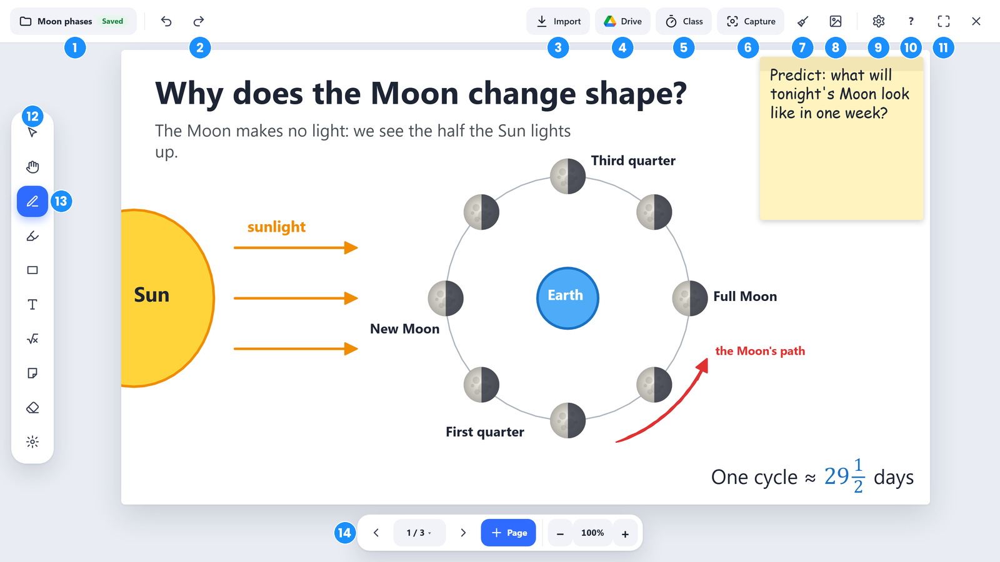
- Board name: your saved boards, a new board, save a copy, and more (see Boards).
- Undo and Redo.
- Import: PDFs and pictures from the PC.
- Drive: files from your Google Drive.
- Class: timer, name picker, polls and Student Mode.
- Capture: your PC screen, a window or a whole web page.
- Clear (the broom): clears everything you added to the page, except locked things and the imported page (tick the box to clear those too). Undo brings it back.
- Save as a picture: the whole page, however tall.
- Settings for the lesson, like how often to ask Allow and the raised-hand chime.
- Help: tips for every tool.
- Full screen (or press F11).
- Tools: Select, Hand, Pen, Highlighter, Shapes, Text, Math, Sticky note, Eraser and Laser.
- Options for the tool you picked: pen type, colors and sizes. Click the tool again to tuck this away. A board opens with the Pen ready and this panel closed, so you see the whole page. Tap the Pen to open it.
- Pages and zoom: previous, the page number (opens Pages, where the Paper is too: plain, grid, lines, dots or chalkboard), next, a new page, and zoom.
2. Pens, highlighter and eraser
The Pen comes in five types: pen, marker, pencil, crayon and chalk. Pick one at the top of the options panel, then a color and size. With an Apple Pencil, pens respond to pressure and tilt like real ones.
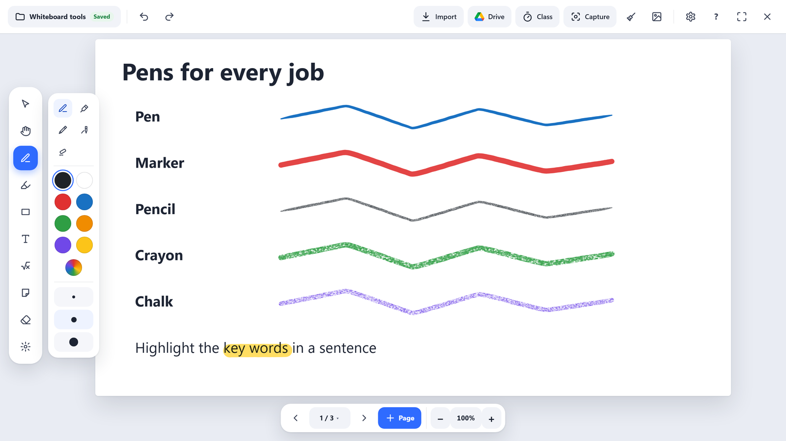
- Highlighter: see-through, so the words underneath still show.
- Eraser: tap it again for its modes. Partial (the usual) rubs out just the part of the pen or highlighter you go over. Whole stroke removes a whole line at once. Object removes anything you touch: shapes, text, notes and pictures too.
- Broom (top bar): clears everything you added to the page: drawings, shapes, text, notes and pictures. Locked things stay, and so does the imported page (a PDF, slide or capture behind your writing). To clear those too, tick Also clear locked things and the imported page when it asks. When there's nothing it would clear, the broom is grayed out (on the PC, in PadLink Go and on the iPad or iPhone); to clear locked things then, Unlock all first.
- Hand: drag to move around a zoomed-in or tall page without drawing. On a PC, hold Space to do the same with any tool.
- Any color: besides the swatches, the last circle opens a color picker.
- Straight lines: hold Shift while drawing (on the iPad, use Keys → Shift).
3. Shapes, fractions and number lines
Click the Shapes tool to open the shape menu: lines and arrows, rectangles, rounded rectangles, circles, triangles, pentagons, hexagons, a polygon with 3 to 12 sides, a star, a cube, a cylinder, a speech bubble, fraction circles and bars, number lines and graph axes. Then drag on the page to draw it.
Border and Fill: before drawing a rectangle, circle, triangle or other closed shape, pick Border or Fill in the options panel, then a color. Fill starts as none. The rainbow circle is any color. To change a shape you've already drawn, select it and use Border or Fill on the bar above it.
Dashed and dotted lines: with Border, pick a solid, dashed or dotted line. It works for lines and arrows too.
Opacity: with Fill, once you've picked a fill color, drag the Opacity slider to make the fill see-through. The little picture above it shows how much of what's behind will show through.
Snap to straight lines and perfect shapes: while drawing, hold still for a moment before letting go. A line locks to the nearest 15° (flat, upright, 45° and so on), a rectangle becomes a square, an ellipse a circle, and a triangle gets even sides. A small tag shows a line's angle as you draw, and turns blue when it snaps. Keep moving and nothing snaps, so any angle is still yours to draw.
Or hold Shift: it snaps straight away, with no pause: a line to 45° steps, a rectangle to a square, an ellipse to a circle. On the PC, hold Shift on the keyboard; on the iPad or iPhone, tap Keys, then hold Shift while you draw.
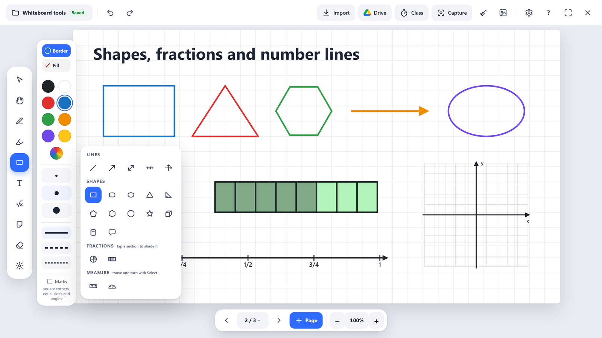
Fractions: pick a fraction circle or bar and set the number of Parts in the options panel. Then tap a section with the Shapes tool to shade it, and tap again to unshade it. Number lines can show fractions too (¼, ½, ¾).
Number lines: set the Start and End numbers, below zero too (−5 to 5, or 20 to 30), and the number of Parts for the ticks. With fractions on, a number line from 0 to 2 in 8 parts counts in quarters: ¼, ½, ¾, 1, 1¼ and so on.
Graph axes: turn on Numbers on the axes, then pick Count by 1, 2, 5 or 10. Parts sets how many boxes and numbers there are on each axis. Turn on First quadrant only for a graph that starts at 0 in the bottom-left corner.
Ruler and protractor: under Measure in the shape menu. Draw one, then switch to Select to drag it over a line or an angle and turn it with the round handle. Both are see-through, so your drawing shows underneath. The ruler measures in inches or centimeters (pick Units) at a fixed scale on the board, so a measurement stays the same when you zoom in or out: a line that's 5.5 inches long reads 5.5 inches at any zoom. Drag the ruler as long as you need. The protractor reads 0 to 180 both ways round, and its angles are right at any size.
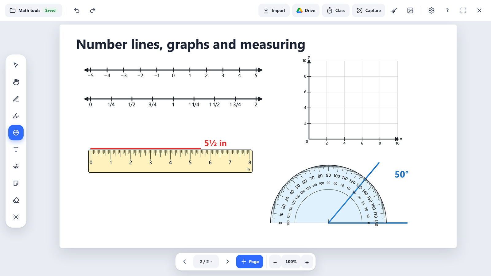
Geometry marks: for rectangles, triangles and polygons, turn on Geometry marks to show a small square in each right angle, ticks on sides of the same length, and arcs in angles of the same size. Select a shape to turn its marks on or off later.
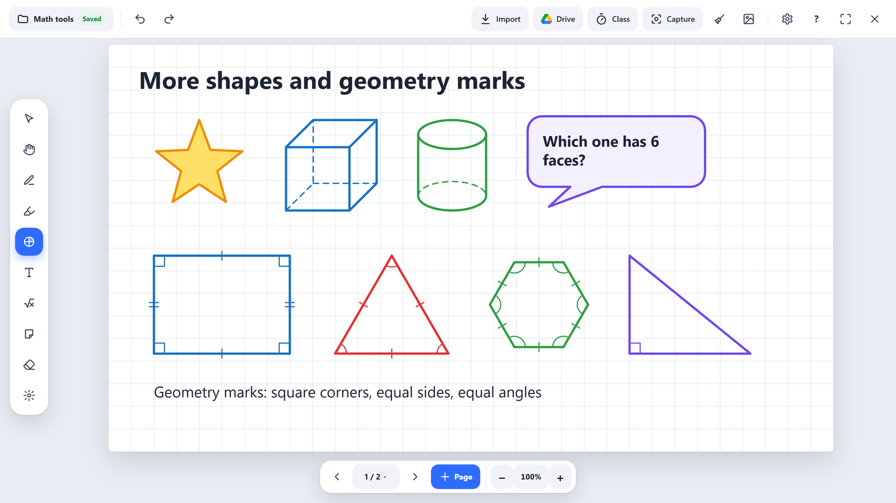
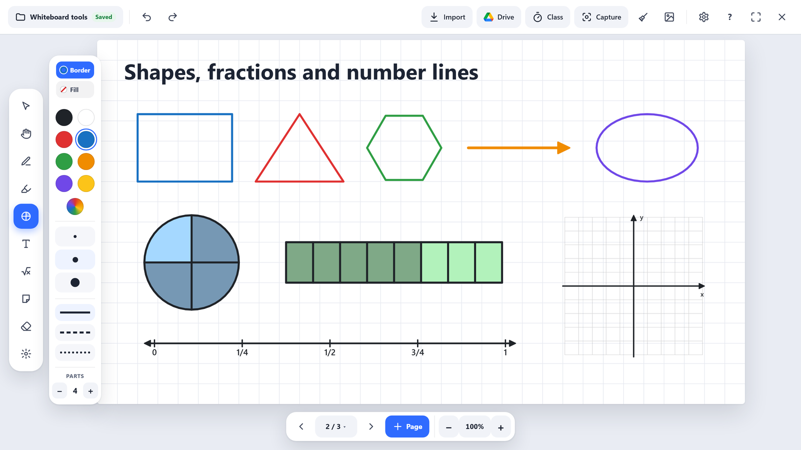
4. Text and math
Pick Text and click where the words go. Type with the keyboard, or on the iPad write with Apple Pencil and it turns into typed text.
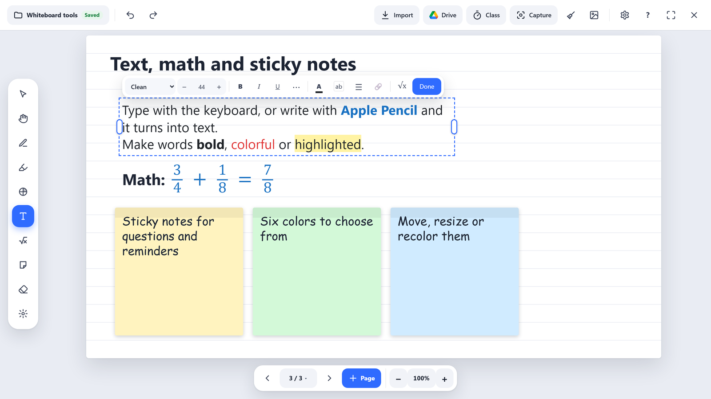
- Select words to make them bold, italic, underlined, colored or highlighted. Click ⋯ for strikethrough, raised or lowered words (x², 5th, H2O) and Clear formatting.
- Lists: bullets, numbers or a checklist (in the ☰ menu). With Select, click a box to tick it; students can tick the boxes on their boards too. Tab indents a line; Shift+Tab moves it back. The same menu has line spacing: 1, 1.5 or 2.
- Tracing letters: pick the font Tracing for dashed print letters on writing lines (top line, dashed middle line, baseline) that students can trace over, like a handwriting sheet. Make the words big, and use 1.5 line spacing to leave room.
- Math in a sentence: click √x for stacked fractions, powers, square roots and symbols like ÷ × ≤ ≥ π.
- All math: the Math tool starts a box that's all math, with the math keyboard open on the iPad.
- Links: click 🔗, type the Words to show (or select them first) and paste the Web address. Click a link while typing to change its words or address. Pasting an address on its own makes a link too. With Select, click a link to open it; students open your links on their boards.
- Click Done or pick another tool to finish. Click the box again with Text to change it.
- On the iPad or iPhone: the screen stays at its size while you type. If the keyboard would cover the box, the board slides up so you can see the box and its bar, and slides back when you're done.
5. Sticky notes
Pick the Sticky note tool and click on the page. A note appears, ready to type on. There are six colors, and blank notes stay on the page to fill in later.
6. Select, move and change things
Pick Select and click anything on the page: a stroke, a shape, text, a sticky note or a picture. Click inside an empty shape, like a circle, to select it too.
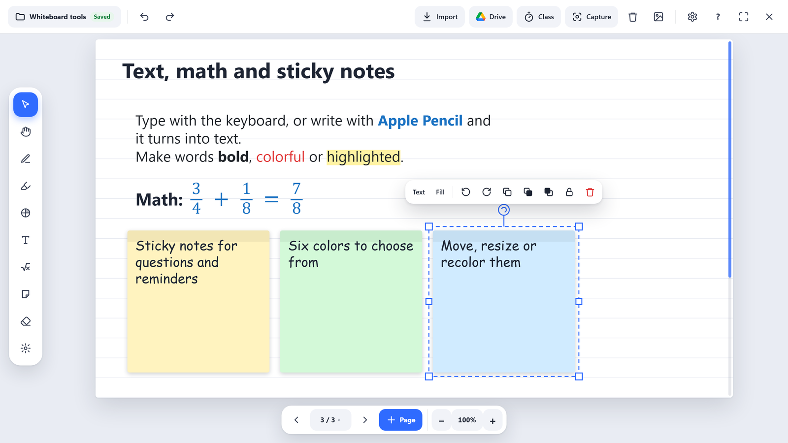
- Move it by dragging, resize it from a corner, or turn it with the round handle on top.
- The bar beside it changes the color, fill and thickness, turns it, duplicates it, brings it to the front or back, locks it, or deletes it. It stays on the screen, even when the thing is at the edge. On the iPad the bar is the same; Border, Fill or ⋯ opens the full panel.
- Several at once: drag a box around them, or Ctrl+click each one. Ctrl+A selects the whole page.
- Group them (Ctrl+G) to move them as one. Ungroup with Ctrl+Shift+G.
- Copy and paste with Ctrl+C and Ctrl+V, or duplicate with Ctrl+D.
Lock what you prepared
Lock the things you set up before class. Then the broom clears only what you and the class added, and the page is ready for the next class.
- Select it and click 🔒 on the bar (or Ctrl+L). A locked thing can't be moved, changed or erased.
- To lock everything on a page: tap Select again, then Lock all. Unlock all is beside it. It's the same on the PC, in PadLink Go and on the iPad or iPhone.
- To change it again, click it and choose Unlock.
7. Pages and zoom
+ Page adds a page. The arrows move between pages. Click the page number to see every page.
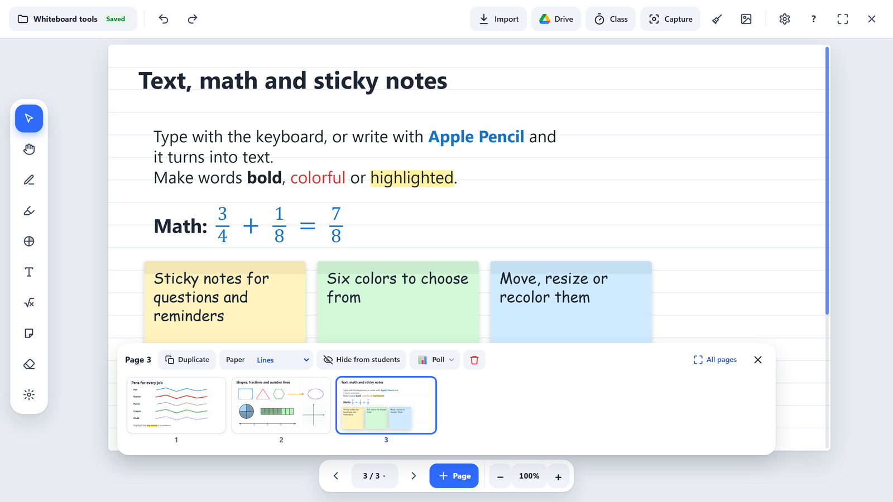
- Click a page to go to it, or drag it to change the order.
- Above the pages, one row for the page you're on: Duplicate, Paper (plain, grid, lines, dots or chalkboard), Hide from students, Poll ▾ (a poll for this page, or paste in questions) and the trash can. On a page you imported (a PDF, slide, photo or capture), Imported page ▾ makes it movable or removes it.
- All pages shows every page big, in a grid: the easy way to rearrange a long lesson. Drag a page where you want it. Select lets you tick several pages and hide, show, duplicate or delete them together (the buttons for the page you're on step away meanwhile, so every button there is for the ticked pages; Done brings them back); drag a ticked page and they all move.
- Hide from students: an answer key or your notes stay in the lesson, but students never get them. Hidden pages show a small amber eye. See Hide a page from students.
- Pages grow taller when you write near the bottom, so long working-out stays on one page. Scroll with two fingers on the iPad or the mouse wheel.
- Zoom with a pinch, Ctrl + mouse wheel, or the + and − buttons. Click the % to see the whole page again.
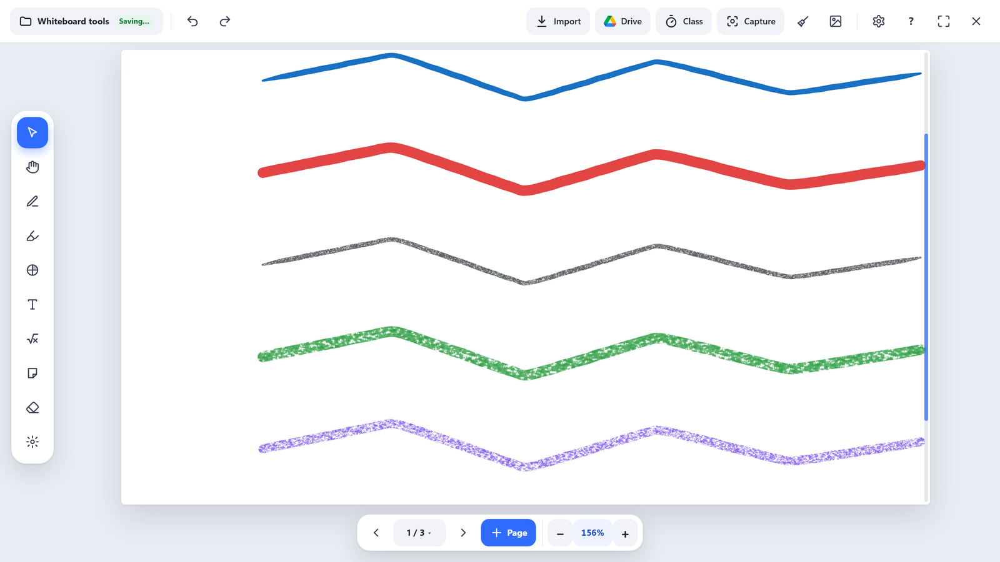
8. Bring in PDFs, pictures and your screen
- Import: choose a PDF or picture on the PC. For a PDF, pick the pages you want, or type ranges like
1-3, 5. - Drive: Google's own file picker opens. Pick a PDF, Google Doc, Slides, Sheets file or picture, then choose its pages. PadLink only gets the file you pick. The page shows which Google account it will use.
- Paste: Ctrl+V puts a copied picture on the page.
Capture adds what's on your PC:
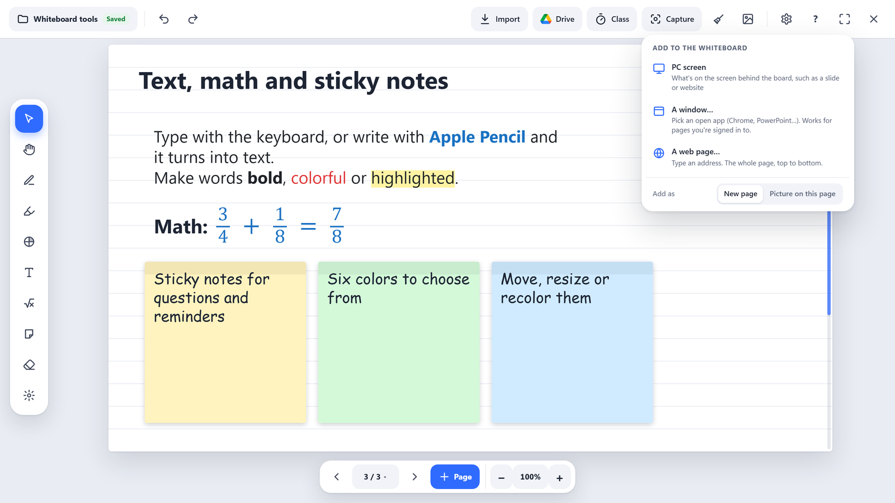
- PC screen: whatever is behind the board, such as a slide or website.
- A window: any open window, even one hidden behind others. Use this for pages you're signed in to, like Google Docs.
- A web page: type an address and the whole page is captured top to bottom, as one tall page.
Each can go on a new page or on this page. You can draw right on top of it.
9. Boards: saving and opening
Your board is saved automatically as you work. Click the board name at the top left for the Boards menu.

- Rename this board, start a New board, or Save a copy.
- Save as a file keeps a
.padlinkfile anywhere, to share or back up. Double-click one to open it in PadLink. - Open a board from the list of your saved boards.
- Each time PadLink starts, you get a fresh board. The last one is waiting in this menu.
10. The laser pointer
The Laser tool (the last one in the tools) points at things without drawing or clicking. Click it again to choose its look, in any color:
- Dot: a bright dot, like a real laser pointer.
- Glow trail: a glowing beam that follows you.
- Spotlight: everything else dims.
- Fading ink: circle or underline something while you talk; it fades a few seconds after you lift, so there's nothing to erase.
- Ring: a soft ring around the spot, so the word underneath stays readable.
- Arrow: a bright arrow, easy to see from the back of the room.
- Ripple: rings spread out each time you press, for "look here!"
- Magnifier: shows what's under it twice as big, for small print.
On the iPad or iPhone, tap Laser in the whiteboard tools, then tap it again for the same looks and colors. The iPad shows the laser in the look you picked, right under your Pencil, so you can see where you're pointing without looking up at the board.
When students are connected, they see your laser on their screens too.
11. From your iPad or iPhone
While the whiteboard is open, your iPad shows the whiteboard's own tools, so you never need to tap tiny buttons in a picture of the PC screen. Tap a color on the iPad and the PC shows it; pick a tool on the PC and the iPad follows.
- iPad: tools on the left, their options beside them, pages at the bottom.
- iPhone held upright: five big buttons at the bottom (Pen, Highlight, Shapes, Eraser, More). Tap the one that's on again for its options.
- Gestures: two-finger tap = Undo, three-finger tap = Redo, two-finger double-tap = see the whole page, pinch = zoom.
- Add to the board (the + button, or More on the iPhone): take a photo or choose one, so a student's work can go straight up on the board.
12. Keyboard shortcuts
| P | Pen | H | Highlighter |
| L | Line | A | Arrow |
| R | Rectangle | O | Circle |
| E | Eraser | V | Select |
| Ctrl+C / V | Copy / paste | Ctrl+D | Duplicate |
| Ctrl+G | Group | Del | Delete |
| PgUp / PgDn | Pages | ↑ / ↓ | Scroll a tall page |
| Ctrl+0 | Whole page | F11 | Full screen |